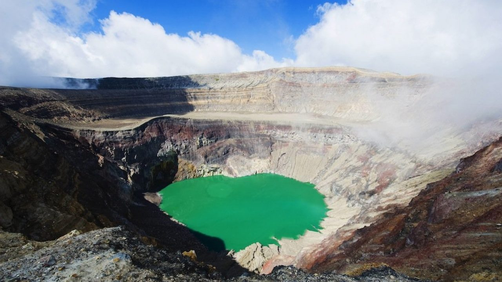

 ¿Que es un volcan? Un volcán es una abertura en la corteza terrestre que permite el escape de roca derretida, gases y escombros hasta la superficie. San Salvador, San Miguel y Santa Ana tienen los volcanes más activos, pero también hay otros distritos y territorios que tienen volcanes activos. Una erupción volcánica puede implicar lava y escombros que pueden desplazarse a una velocidad de hasta 100 mph, destruyendo todo a su paso. La ceniza volcánica puede desplazarse por cientos de millas y provocar graves problemas de salud. Una erupción volcánica puede: Ver mas
¿Cuál es la situación de cada uno de los volcanes en el país? Un volcán es una estructura geológica por la que emergen el magma en forma de lava y gases del interior de la Tierra. ¿En todos los volcanes se pueden realizar actividades turísticas? La hidrología es la ciencia que se ocupa del estudio de la distribución, movimiento y propiedades del agua en la Tierra. ¿Cuántos volcanes hay en el país? La meteorología es la ciencia que estudia los fenómenos atmosféricos y las condiciones físicas que los producen. ¿Qué alcance han tenido las emanaciones de gases y cenizas? La geología es la ciencia que estudia la composición y estructura interna de la Tierra, y los procesos que la han afectado desde su origen. ¿Cómo se monitorean cada uno de los volcanes? ¿Qué técnicas aplican a cada uno de ellos? ¿Cómo se alerta? La oceanografía es la ciencia que estudia la composición, ecología, geología y física del océano. ¿En qué se basan los monitoreos de campo? ¿Cada cuánto tiempo se realiza el monitoreo y se aplican las diversas técnicas? La oceanografía es la ciencia que estudia la composición, ecología, geología y física del océano.